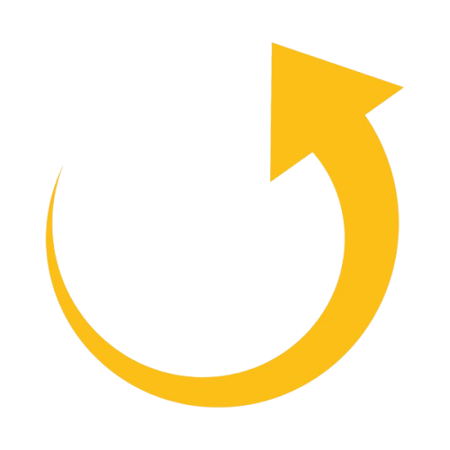
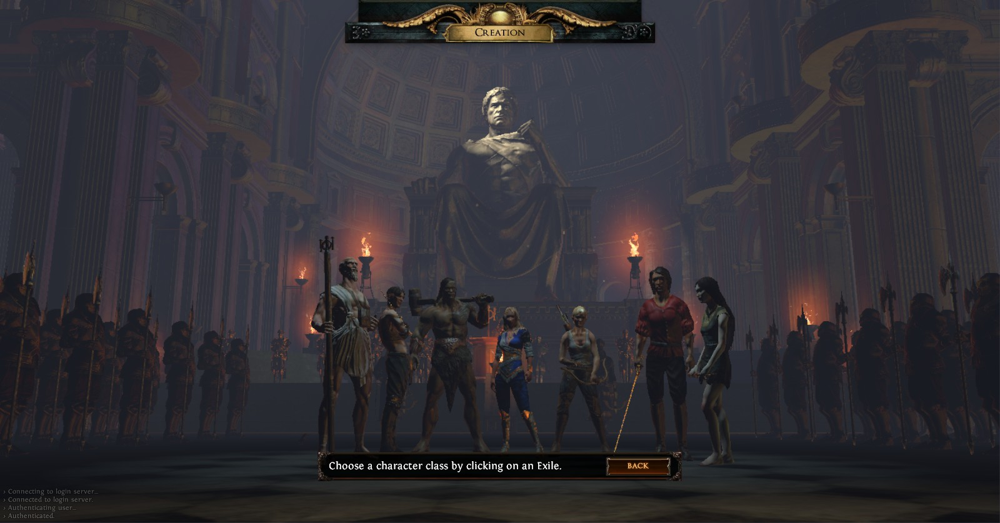
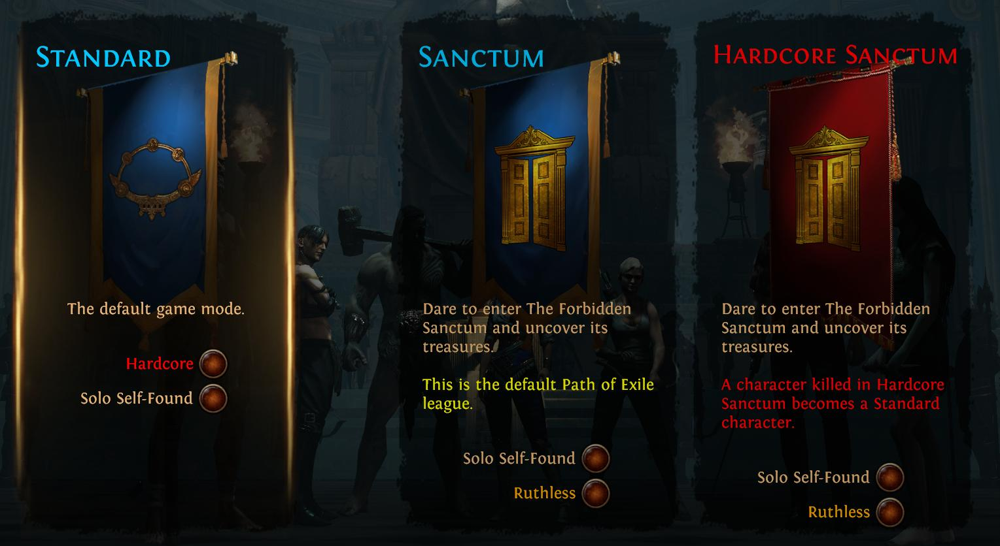

¿Qué es Path of Exile?
Path of Exile, conocido como PoE, es un juego
ARPG (action role-playing game) y MMO (massively multiplayer online).
Si alguna vez has jugado a algún juego de la saga Diablo, ya sabes por dónde van los tiros.
La mayor diferencia está en la dificultad: El Diablo es un paseo por el parque y el PoE es
caminar descalzo por un campo de cristales rotos mientras un enano te pega con un palo con clavos escalar una montaña.
Está ambientado en un mundo de fantasía oscura, es decir, fantasía y terror, aunque terror será el que pases al mirar por la ventana y ver que vuelve a ser de día.
Desarrollado por la compañía neozelandesa Grinding Gear Games, es conocido desde 2013 como uno de los ARPG más complicados de masterizar hasta la fecha.
El gameplay principal se basa en controlar a un personaje desde un punto de vista cenital y explorar grandes zonas exteriores, cuevas subterráneas o mazmorras, luchar contra monstruos y completar misiones para ganar EXP y equipamiento.
Todas las zonas, salvo los campamentos principales, se generan de forma aleatoria para cada jugador. Los
objetos también son generados de forma aleatoria, con determinadas propiedades mágicas y rarezas, yendo
desde un objeto mágico, raro o único.
 Clases
Las clases utilizan tres atributos principales: FuerzaAntes de empezar a jugar veremos la siguiente imagen:

De izquierda a derecha, las clases son:
- Templario: representa la fuerza y la inteligencia. Puede convertirse en un poderoso conjurador o usar su daño elemental para realizar poderosos ataques cuerpo a cuerpo.
- Sombra: representa la destreza y la inteligencia. Puede infligir potentes golpes críticos con armas o hechizos y sus trampas y minas pueden incapacitar a los enemigos o causar mucho daño.
- Guerrero: Representa la fuerza. Los personajes relacionados con la fuerza suelen hacer un gran daño y resisten mucho antes de ser vencidos. El elemento relacionado con la fuerza es el fuego.
- Heredera: representa los tres atributos y, por tanto, es la clase más flexible en términos de diseño de personaje y uso de habilidades.
- Cazadora: Representa la destreza. Los personajes relacionados con la destreza son ágiles y difíciles de golpear, a menudo atacan desde la distancia o con múltiples armas. El elemento relacionado con la destreza es el hielo.
- Duelista: Representa la fueza y la destreza. Hace uso tanto de la velocidad de ataque de la destreza como del daño de la fuerza para infligir un gran daño de forma rápida.
- Bruja: Representa la inteligencia. Los personajes relacionados con la inteligencia suelen usar magia para atacar. El elemento relacionado con la inteligencia es el rayo.
Ligas
Una vez escogida nuestra clase, veremos esto en nuestra pantalla:

Las Ligas varían a medida que terminan y empieza una nueva, en este caso tenemos la Liga Sanctum.
Las ligas ofrecen mecánicas añadidas al juego base, habiendo desde modos de juego diferentes a gestionar nuestro propio pueblo.
- Liga Estándar: es la liga permanente, conteniendo el juego base y las mecánicas de las ligas anteriores.
- Liga Actual: en este caso, Liga Sanctum. Conteniene el juego base, las ligas anteriores y la liga actual. Son temporales, empiezas de cero y al terminar todo tu progreso se mueve a la liga estándar.
- Liga HardCore: es como la Liga Actual, pero versión HardCore, es decir, sólo tienes una vida. Al morir, tu personaje es enviado a la Liga Actual
-
Otros conceptos:
- Solo Self Found: modo de juego donde no puedes comerciar ni formar grupos con otros jugadores. Estás solo.
- Ruthless: modo de juego más complicado. La gran mayoría de mecánicas y habilidades que benefician al jugar están bloqueadas.